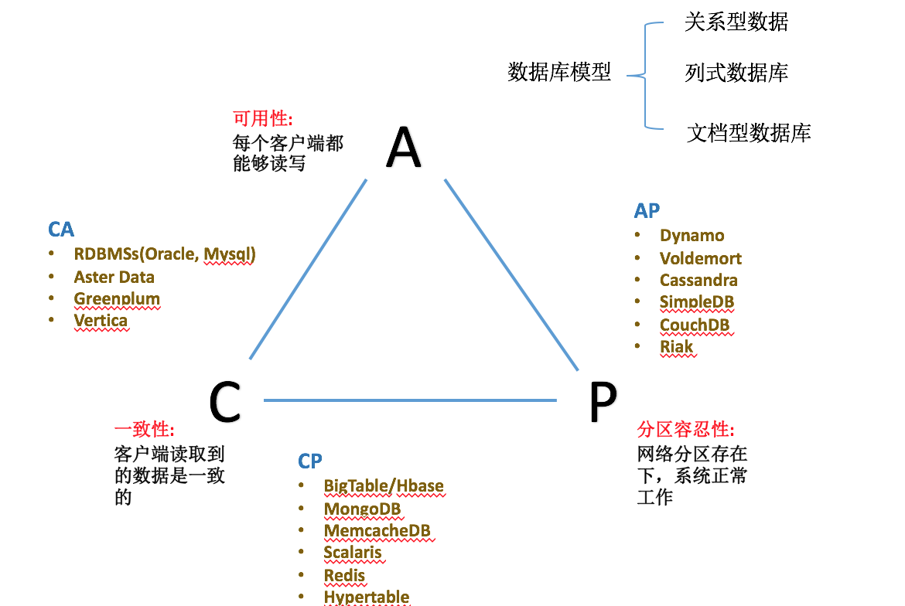
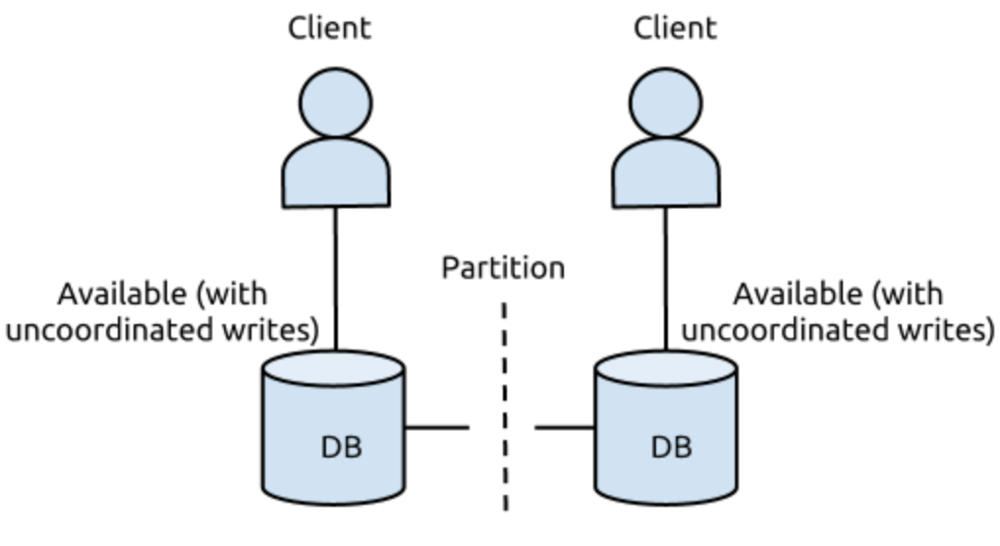

深入理解分布式环境需要理解几个基本的概念CAP、BASE、ACID等。本篇以下记录了这几个基本概念及其关系。
CAP原则
CAP(Consistency/Availavility/Partition Tolerance)分别代表强一致性、可用性、分区容忍性。
强一致性 在分布式系统中的同一份数据多副本情形下，对数据的更新操作体现出的效果与只有一份数据是一样的。
可用性：客户端在任何时刻对大规模数据系统的读、写操作都应该保证在限定的时间内完成。一定时间指的是，在可以容忍的范围内返回结果，结果可以是成功或者失败。
分区容忍性：在大规模数据系统中，网络分区现象（分区间的机器无法进行网络通信的情况）必然会发生，系统需要能够在这种情况下继续工作。就分布式存储而言，分区相当于系统如果不能在时限内达成数据一致性，就意味着发生了分区的情况，必须就当前操作在C和A之间做出选择。
CAP权衡
It states, that though its desirable to have Consistency, High-Availability and Partition-tolerance in every system, unfortunately no system can achieve all three at the same time.
在分布式系统的设计中，没有一种设计可以同时满足一致性，可用性，分区容错性 3个特性
一个数据存储系统不可能同时满足上述三个特性，只能同时满足其两个特性(CA,CP,AP)。当前所有的数据存储解决方案，都可以归类的上述三种类型。
- CA 满足数据的一致性和高可用，但是没有可扩展性。传统的关系型数据库基本都采用该原则（Oracle、Mysql等）
- CP 满足数据的一致性和分区性，但是会牺牲数据一致性。一旦遇到分区容错故障，那么受到影响的服务需要等待一定的时间，因此在等待期间系统无法对外提供服务。
- AP 满足数据的可用性和分忍性，但在数据一致性方面会作牺牲(这里指的是强一致性)，但是能够保证数据的最终一致性。比如当前的NoSql大多都是这种。

C与A的抉择： 在分布式存储系统中，网络必然会出现延迟丢包等问题，或者说集群中的节点必然动态加入与离开（也可以认为是集群内部的网络分区），所以分区容忍性是必须要遵守的原则。所以我们只能在一致性和可用性之间进行权衡。
简单示例
一个DB服务搭建在两个机房，两个DB实例同时提供写入和读取

1.假设DB的更新操作是同时写DB都成功才返回成功，网络故障无法提供服务/提供降级的读取服务
在没有出现网络故障的时候，满足CAP原则。如果网络出现故障，无法提供服务或者只能提供读取功能，所以返回失败，即A条件无法满足，仅能满足CP原则。
2.假设DB的更新操作是只写本地机房成功就返回，通过binlog/oplog回放方式同步至侧边机房
这种操作保证了在出现网络故障时,双边机房都是可以提供服务的，读写操作都能成功，意味着满足了AP，但是它不满足C条件，因为更新操作返回成功后，双边机房的DB看到的数据会存在短暂不一致（仅能保证最终一致性）。
CAP Reolad
Eric Brewer在2012年发表文章中指出：实践过程中应用CAP理论时不得不在三要素中选择两个而牺牲另外一个的做法具有误导性。
- 实际系统中，网络分区（P）出现概率很小，不应为了容忍这种小概率事件而在设计之初就选择放弃A或者C。
- 即使必须在AC之间做出取舍，也不应该是粗粒度的在整个系统级别进行取舍，而是应该考虑系统中存在不同的子系统。
- CAP三者并非是绝对二元式的有或无，而是应该将其看作连续变量，即可以看作在一定程度上的有或没有。
对传统CAP的修正步骤： 首先能够识别网络分区的发生，然后在网络分区场景下进入明确的分区模式，此时会限制某些系统，最后在网络分区解决后能够进行善后处理，即恢复数据的一致性或者弥补分区模式中产生的错误。
ACID原则
ACID是关系型数据库采纳的原则，代表定义为：
- 原子性（Atomicity）：一个事务要么全部执行，要么完全不执行，不允许一个事务只执行一半就停止
- 一致性（Consistency）：事务在开始和结束时，应该始终满足一致性约束条件
- 事务独立（Isolation）：如果有多个事务同时执行，彼此之间不需要知晓对方的存在，而且执行时互不影响，不允许出现两个事务交错、间隔执行部分任务的情形。
- 持久性（Durability）：事务的持久性是指事务运行成功以后，对系统状态的更新是永久的，不会无缘由的回滚撤销。
BASE 原则
大多数环境下的云存储系统和NoSQL系统采纳了BASE原则：
- 基本可用（Basically Available）：在绝大多数时间内系统处于可用状态，允许偶尔失败，所以称为基本可用。
- 软状态/柔性状态（Soft State）：数据状态不要求在任意时刻都完全保持同步，即处于有状态和无状态之前的中间状态。
- 最终一致性（Eventual Consistency）：最终一致性是一种弱一致性，软状态不要求任意时刻数据保持一致同步，但最终一致性要求在给定时间窗口内数据会达到一致状态。
CAP/BASE/ACID 三者关系
ACID更加强调的是数据一致性，为传统数据库设计的思路，类似于CAP中的CA原则；BASE强调的是可用性，弱化数据强一致性的概念，是对大规模分布式数据系统的一种需求，类似于CAP中的AP原则。
ACID与CAP的兼顾： 1. ACID中的C指的是对操作的一致性约束，而CAP中的C指的是数据的强一致性（多副本对外表现类似于单副本），可以将CAP中的C看做ACID中C所涵盖语义的子集。 2. 当出现网络分区时，ACID中的事务只能在多个分区中的某个分区执行，事务的序列化要求通信，而网络分区出现无法做到这一定。 3. 当出现网络分区时，多个分区可以进行ACID中的D持久化操作，当网络分区解决后，则集群会根据这些记录发现违反ACID一致性约束的内容并予以纠正。
总之，当CAP中的P出现时，如果每个分区都尽可能执行ACID，那么对于网络分区问题解决后数据一致性恢复将有很大帮助。